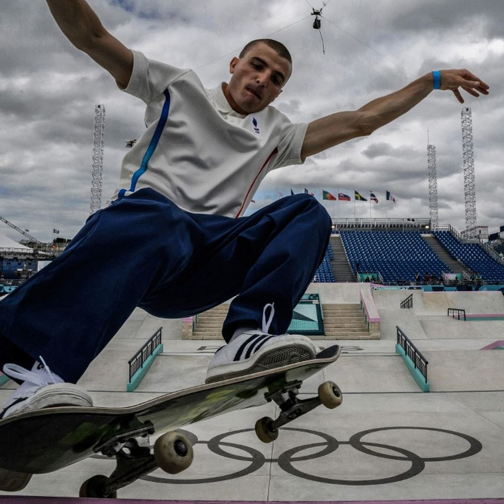
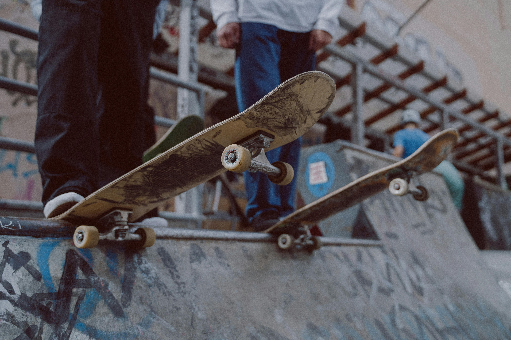

Les épreuves de skateboard des Jeux olympiques d'été de 2024 se sont déroulées à Paris, en France, et ont rassemblé les meilleurs skateurs et skateuses du monde.
Cette discipline, relativement récente aux Jeux olympiques, a attiré beaucoup de spectateurs grâce à son style spectaculaire et moderne.
Les compétitions ont eu lieu dans deux catégories principales : le street et le park, chacune demandant des techniques et des styles différents.
Dans l’épreuve de street, les skateurs réalisent des figures sur des obstacles qui ressemblent à ceux que l’on trouve dans la rue, comme des escaliers, des rampes ou des rails.
Chez les hommes, la médaille d’or a été remportée par Yuto Horigome, représentant le Japon, grâce à des figures très techniques et parfaitement exécutées.
Chez les femmes, c’est la jeune prodige japonaise Coco Yoshizawa qui s’est illustrée en remportant la médaille d’or avec une performance impressionnante malgré son jeune âge.Dans l’épreuve de park, les compétiteurs évoluent dans une grande structure avec des courbes et des rampes permettant de réaliser des sauts très hauts et des figures aériennes spectaculaires. 
Chez les femmes, la victoire est revenue à l’Australienne Arisa Trew, qui a impressionné les juges avec ses figures audacieuses et sa grande fluidité.
Ces épreuves ont montré l’évolution rapide du skateboard et l’arrivée de nombreux jeunes talents venus du monde entier.
Le skateboard est aujourd’hui reconnu comme un sport spectaculaire et créatif, capable d’attirer une nouvelle génération de passionnés.
Les Jeux olympiques de 2024 ont ainsi confirmé que le skateboard a désormais une place importante dans le programme olympique.

Les épreuves de skateboard des Jeux olympiques d'été de 2024 se sont déroulées à la Place de la Concorde à Paris.
Plusieurs skateurs du monde entiers ont participé pour tenter de gagner une médaille dans la disciplines street et park, chez les hommes et chez les femmes.
Dans l'epreuve street hommes, le skateur japonais Yuto Horigome a remporté la médaille d'or grace à une très bonne performance en finale.
Il a été suivi par l'Américain Jagger Eaton qui agagné la médaille d'argent, tandis que l'Américain Nyjah Huston a obtenu la médaille de bronze.
Enfin, dans l'épreuve park femmes, l'Australienne Arisa Trew a remporté la médaille d'or.
La japonaise Kokona Hiraki a gagné la médaille d'argent et la Britannique Sky Brown a obtenu la médaille de bronze.